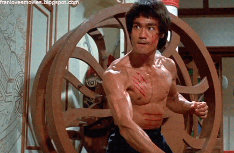

RoleModel

- "아는 것만으로는 충분하지 않다. 적용할 줄 알아야만 한다.
의지만 갖추고는 충분하지 않다. 행동으로 옮겨야만 한다." - 이소룡이 남긴 명언이다. 중학교 때 이 구절을 처음 읽었는데 그 당시에 벼락치기로 중간고사를 준비하고 있던 나에게는 어마어마한 충격으로 다가왔던 문장이다. 수박 겉 핥기 식으로 공부해봤자 적용할 줄도 모르는데 그게 무슨 소용이 있겠는가. 우리는 나무를 보지 말아야 하고 숲을 보아야한다.
- "정말 중요한 일이라면, 다른 생각을 가지고 있더라도,
당신은 그 일을 계속 해야하는 것이다." - 테슬라 사장인 일론 머스크가 한 말이다. 지쳤을지도 모르고 의욕을 상실했을지도 모른다. 하지만 반드시 해야하는 일이고 어차피 해야하는 일이라면 가장 먼저 열심히 끝내는 것이 어떨까. 나도 가장 하기 싫고 가장 귀찮은 일부터 제일 먼저 후딱 끝내버리자라는 마음으로 하고 있는데 오히려 편한 것 같다.